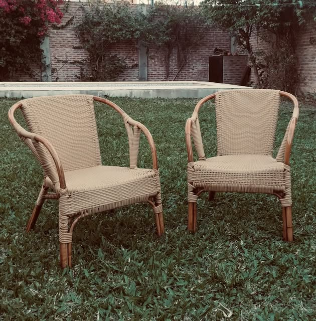
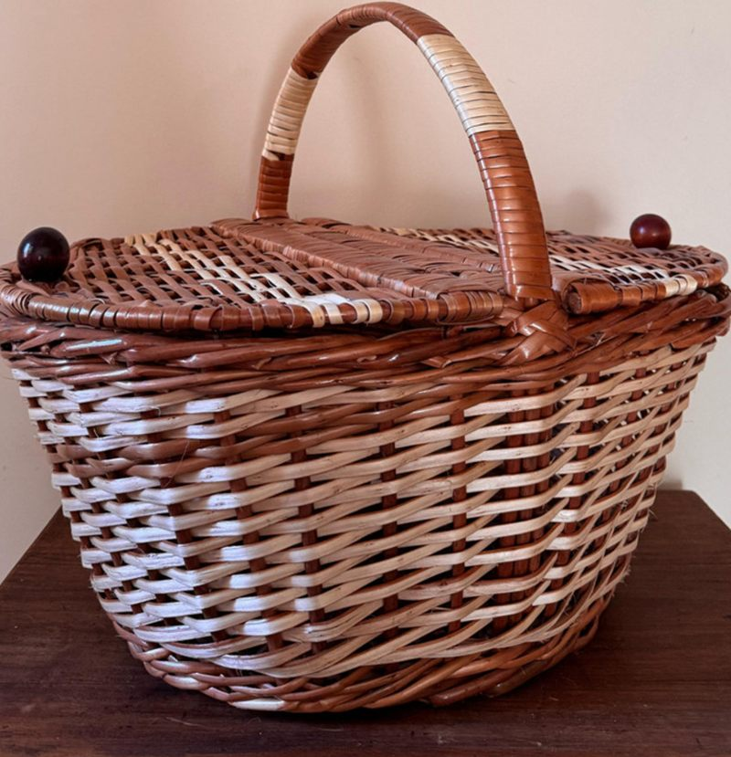
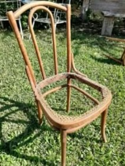
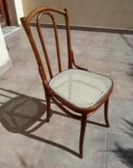
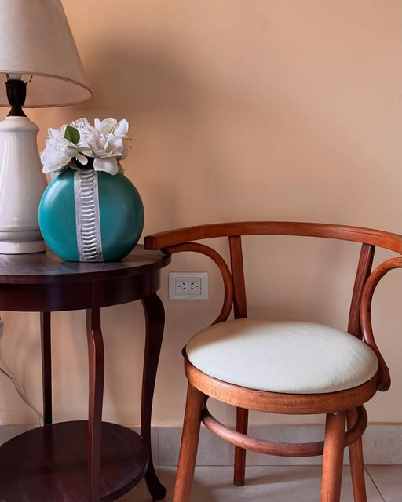
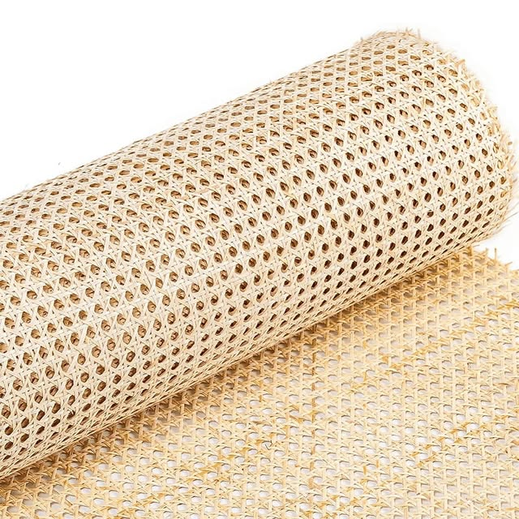
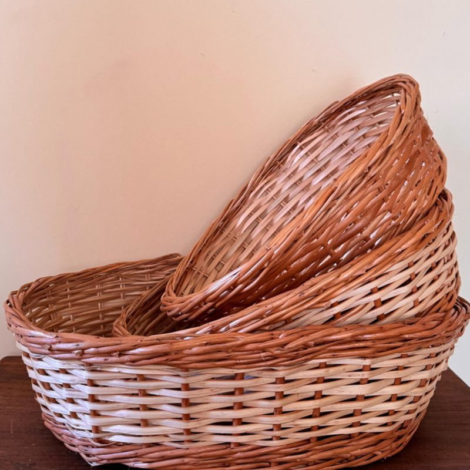
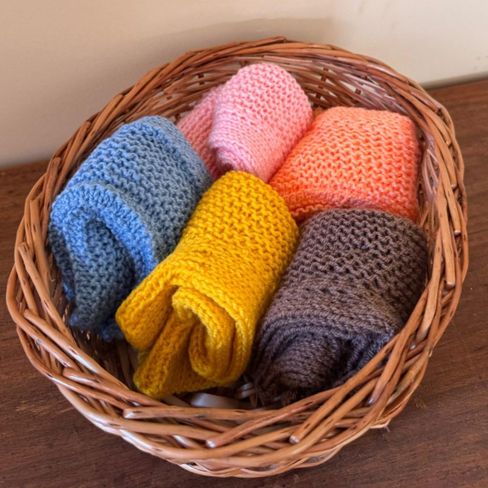
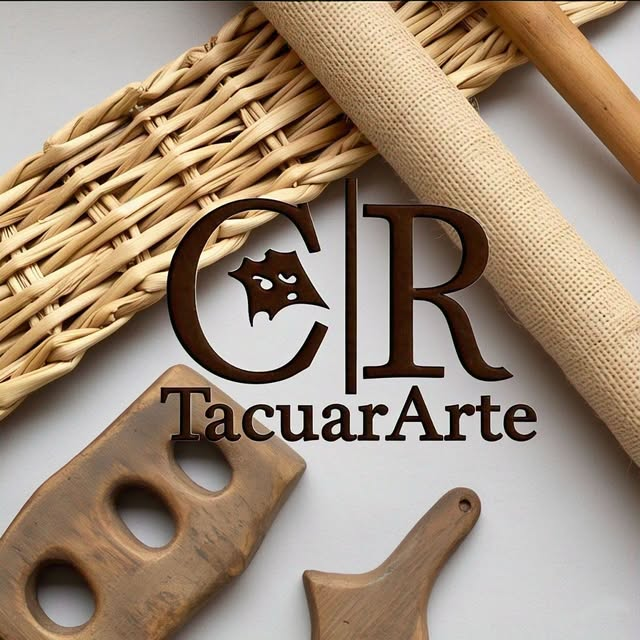

Taller artesanal · Corrientes, Argentina
Muebles con historia, restaurados a mano.
Devolvemos a la vida sillas, sillones y muebles de familia: esterillado, enjuncado, tapizado y carpintería. Y tejemos canastos de mimbre a pedido, uno por uno.
Mandá fotos del mueble por WhatsApp y te respondemos con el presupuesto.


Lo que hacemos
Oficios de taller, con tiempo y a mano
Trabajamos sobre muebles que ya tenés o fabricamos a medida. Cada trabajo se presupuesta según el mueble y lo que necesita.
-
Restauración de muebles
Sillas, sillones, mesas y muebles antiguos: reparación de estructura, encolado, lijado y terminación.
-
Esterillado francés
Asientos y respaldos de esterilla tejida, en fibra natural o sintética.
-
Enjuncado
Asientos enjuncados en papel kraft, el tejido clásico de las sillas de campo.
-
Tapizados
Retapizado de sillas, banquetas y sillones, con cambio de goma espuma y telas a elección.
-
Carpintería
Trabajos en madera a medida, reparaciones y piezas de reemplazo para muebles existentes.
-
Artesanías
Piezas en madera, metal, tacuara y mimbre: canastos, paneras, decoración y más.
Antes y después
Lo que parecía perdido, vuelve a tener vida


Silla de madera curvada
Llegó sin asiento y con la madera castigada por los años. Se limpió y ajustó la estructura, y se le tejió un asiento nuevo con esterilla de ratán (esterillado estilo francés).
¿Tenés una parecida? Consultanos →

Más trabajos en @tacuararte
Cestería en mimbre · 100% artesanal
Canastas, modelos varios
Cada canasta se teje a mano en el taller. Trabajamos a pedido y de manera personalizada: tamaño, forma y combinación de colores a gusto.


Trabajos personalizados
Variedad en tamaños y formas
¿Necesitás una canasta para un lugar puntual, un juego de paneras o un regalo? Contanos qué buscás y lo hacemos a medida.
Encargar a medidaPaso a paso
Cómo trabajamos
-
1
Mandanos fotos
Escribinos por WhatsApp con fotos del mueble o una idea de lo que querés encargar.
-
2
Presupuesto
Te contamos qué trabajo necesita, con qué materiales y el precio.
-
3
Manos a la obra
El trabajo se hace en el taller, a mano y sin apuro.
-
4
Entrega
Coordinamos la entrega de tu mueble restaurado o tu pieza terminada.
Contacto
¿Tenés un mueble esperando una segunda vida?
Escribile a Carlos y contale qué necesitás. Atendemos consultas por WhatsApp e Instagram.
- 3794-637135
- @tacuararte
- Taller
- Corrientes, Argentina
